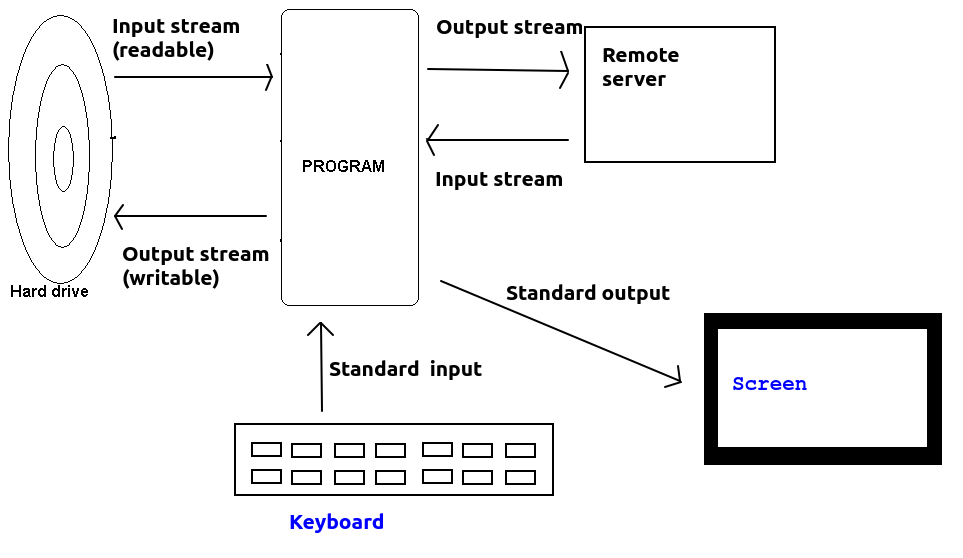

Today we will look at how to perform file input/output (file I/O) in Node.js. This will allow you to create new files, or open existing files, that exist on your server. We will also look at how to upload files to a server in Node.js.
Node.js comes with an inbuilt module fs to handle basic file I/O (see the documentation). You can open an existing file and loop through each line, open an existing file at once, or write to a new file. There are two versions of fs: the non-promise (callback-based) version and the promise-based version. We will use the promise-based version as it allows simpler code with async/await. Here are some examples:
const fs = require('fs').promises; // use promise-based version
async function fileTest() {
try {
const fp = await fs.open('bytes.bin', 'r');
const buffer = Buffer.alloc(10);
const { bytesRead } = await fp.read({buffer: buffer});
console.log(buffer);
if(bytesRead != 10) {
console.error("Less than 10 bytes read. File corrupted");
process.exit(1);
}
fp.close();
} catch(e) {
console.error(e);
process.exit(1);
}
}
fileTest();
This example reads in 10 bytes from file and stores them in a Buffer. A Buffer is a Node.js data structure used to represent bytes in memory. The first thing we need to do is open the file:
const fp = await fs.open('bytes.bin', 'r');
This opens the file in read mode (hence 'r'), and resolves with a FileHandle (the variable fp in the example above). A FileHandle is a 'pointer' to an open file which can be used to perform operations on it; when opened it 'points' to the start of the file but as the file is read, it moves through the file.
Note how we then allocate memory for a buffer with capacity 10 bytes. We then call the read() method of the FileHandle to read the bytes into the buffer from the file. This will return an object containing two properties:
bytesRead - the number of bytes read from the file;buffer - the buffer that the bytes have been read into. If we supplied a buffer within the options passed in as an argument to read() it will be the same buffer; if not, a new buffer will be created and returned.const { bytesRead } = await fp.read({buffer: buffer});
What is this doing? fp.read() resolves with a an object containg a bytesRead property representing the bytes read. So we could equally well do:
const obj = await fp.read({buffer: buffer});
if(obj.bytesRead != 10) {
// ...
However, the destructuring operator { } allows us to "unpack" the object into variables with names corresponding to the property names of the object. So if we wanted to use the buffer property of the object returned from read() (which we might do if we didn't create a Buffer ourselves, as a Buffer (of 16384 bytes) is created for us if we don't supply one) then we could also obtain it using destructuring:
const { buffer, bytesRead } = await fp.read({});
Note here that we do not pass in a buffer to read(), and instead give it an empty options object; in this case read() will allocate a buffer for us.
The next example will illustrate writing to file.
const fs = require('fs').promises;
async function fileWriteTest() {
try {
const array = [ 1, 4, 9, 16, 25, 36, 49, 64, 81, 100 ];
const buffer = Buffer.from(array);
const fp = await fs.open('outbytes.bin', 'w');
const { bytesWritten } = await fp.write(buffer);
console.log(`Number of bytes written: ${bytesWritten}`);
fp.close();
} catch(e) {
console.error(e);
process.exit(1);
}
}
fileWriteTest();
Note how we:
'w' indicates we wish to open the file for writing);buffer (the buffer written) and bytesWritten (the number of bytes successfully written). Again we use destructuring to extract the latter value into a variable.Note that the write() method of the FileHandle will also accept a string, rather than a buffer. This allows us to easily write text to file. The following example shows this:
const fs = require('fs').promises;
async function textFileWriteTest() {
try {
const array = [ "C++", "Java", "JavaScript", "PHP", "Python", "Kotlin" ];
const fp = await fs.open('languages.txt', 'w');
for(let language of array) {
await fp.write(`${language}\n`);
}
fp.close();
} catch(e) {
console.error(e);
process.exit(1);
}
}
textFileWriteTest();
This example creates an array of strings and then loops through them with a for/of loop. We write each line in turn: note how we need to add a new line character (\n).
We can also perform some commonly-used higher-level operations with the fs package with minimal code. For example we can read in the entire contents of a file with fs.readFile():
const fs = require('fs');
async readWholeFile() {
const wholeFile = await fs.readFile("data.txt").toString();
const lines = wholeFile.split("\n");
console.log(lines);
}
readWholeFile();
Note how readFile() resolves with a buffer containing the entire contents of the file (which is then converted to a string with toString). We then split the string into an array representing each line; note how we can use the split() method, with a given delimiter string, to split a string into an array at a certain character. (We could use the same technique to split a line at the commas in a CSV file).
To understand some features of Node file I/O it is useful to understand the meaning of the term stream. A stream represents the flow of data from one device to another. Examples of streams include:
process.stdinprocess.stdoutnode-fetch APIStreams divide into input and output streams. An input stream represents input to the program (from file, keyboard, network, etc), while an output stream represents output from the program (to file, screen, network etc). In Node parlance, input streams are known as readable streams and output streams as writable streams.
The diagram below shows examples of streams:

A nice feature of the Node.js file I/O functionality is the ability to pipe streams. What does this mean? Remember, from above, that a stream is a flow of bytes from one entity to another. We can connect one stream to another, to transfer information from an input source to an output destination.
Here is the simplest possible use of a pipe. We pipe standard input (process.stdin) to standard output (process.stdout). What will this do? It will read in input from the keyboard and echo it to the screen. The stream of information into the program from the keyboard is piped straight out to the screen (standard output).
process.stdin.pipe(process.stdout);This example will continue until the user terminates the input stream with Control-D.
Here is an example which will pipe standard input to a file:
const fs = require('fs');
const outStream = fs.createWriteStream('output.txt');
process.stdin.pipe(outStream);
Again this will continue until the user terminates standard input with Control-D. Here is an example which will create an input stream from a file, and stream it to standard output (i.e. the file contents will appear on screen):
const fs = require('fs');
const inStream = fs.createReadStream('file.txt');
inStream.pipe(process.stdout);
and finally here is an example which will copy one file to another by opening an input stream from the first file, an output stream to the second file, and pipe the input stream to the output stream:
const fs = require('fs');
const inStream = fs.createReadStream('file1.txt');
const outStream = fs.createWriteStream('file2.txt');
inStream.pipe(outStream);
You can also do more complex piping operations by creating a pipeline with multiple stream operations , such a technique can be used for example to zip files using a zip stream from the zlib module.
So for example if we connect to a remote web API from our own server, we receive a stream of bytes from the remote API. Now, let's say we want our server to act as a proxy, or middle-person, between the remote API and the user, so that the user requests a resource from our own server but it is ultimately sourced from a remote third-party API (an example of when you want to do this is given below). In this case, there is no reason to save the response from the remote API in the Node server's memory; you can instead just forward - or pipe - the stream on to the ultimate client, i.e. the web browser.
A good example of where this might be useful is where a remote API requires an API key. An API key is a code, unique to a given registered user, which is used to access certain APIs which may have usage limits, or require payment for heavy use. Use of an API key ensures that users of the remote API do not overload the API's servers, or allows charging for APIs if a client exceeds a certain number of requests, e.g. per month. Many mapping providers use API keys. API keys, however, need to be secret, so you will not want to include them in your client-side JavaScript code as otherwise people might 'steal' them. So a better pattern is for your client-side JavaScript to access the remote API via a proxy route on your own server. The proxy route can forward the request on to the remote API and add the API key. So the API key can, for example, be stored in a .env file.
So here is an example of a proxy route which forwards a request on to a remote API, adding an API key, and using piping:
app.get('/map/:z/:x/:y.png', async(req, res) => {
const mapsResponse = await fetch(`https://megamaps.example.com/map/${req.params.z}/${req.params.x}/${req.params.y}.png?apiKey=${process.env.API_KEY}`);
`
// When piping we need to set the correct content type on our headers
res.set({'Content-Type': 'image/png'});
mapsResponse.body.pipe(res);
});
Note how this is working. We use the node-fetch API (you should install version 2 - npm install node-fetch@2 - for this to work as version 3 uses ES6 modules which we have not covered yet) to perform a fetch request to the megamaps.example.com remote map server, forwarding on the requested x,y and z tile coordinates to it and adding an API key stored in .env We await the response and then take the body of the response (a stream containing the content, i.e the requested tile). This will be a stream of the bytes making up the tile. So this is piped into the response from our own route (i.e. res), which will result in the map tile being forwarded directly to the ultimate client - the browser - without being processed by our own server.
Another use of proxy routes is to allow access to remote APIs which do not have CORS set up from an AJAX front end on our own server. The same-origin policy prohibits AJAX requests to third-party servers, but we can circumvent this by using a proxy. Our AJAX front end communicates with the proxy on our own server, and the proxy forwards the request on to the remote API. Again, we can setup a pipe on our proxy route which forwards the response stream on to our AJAX front end. Here is a real example, used to access the OpenStreetMap Nominatim API, which provides search services:
app.get('/nominatimSearch/:query', async(req, res) => {
const nominatimResponse = await fetch(`https://nominatim.openstreetmap.org/search?format=json&q=${req.params.query}`, {
headers: {
'User-Agent': 'OpenTrailView 4',
'Referer': 'https://opentrailview.org'
}
});
// When piping we need to set the correct content type on our headers
res.set({'Content-Type': 'application/json'});
nominatimResponse.body.pipe(res);
});
It is possible to handle certain events emitted through the use of streams. For example the error event to indicate an error (e.g. opening a non-existing file), the end event for readable (input) streams when all data has been read, and the finish event for writable (output) streams when all data has been written. For example:
const instrm = fs.createReadStream('file1.txt');
instrm.on("error", e => { console.error(`Input stream: ERROR ${e}`); } );
instrm.on("end", () => console.log("READ...") );
const outstrm = fs.createWriteStream('file2.txt');
outstrm.on("error", e => { console.error(`Output stream: ERROR ${e}`); } );
outstrm.on("finish", () => console.log("WRITTEN...") );
instrm.pipe(outstrm);
More information on streams can be found on the API documentation.
Having looked at file I/O in general, we will now consider how to upload files to a server. When a file is uploaded, it is sent in multipart/form-data format. An example of this is shown below; here we are uploading a file called cats_small.jpg via an item of POST data called userPhoto.
POST /photos/upload HTTP/1.1 Host: example.com Content-Type: multipart/form-data; boundary=-----------------------------36350044621708912132908698620 -----------------------------36350044621708912132908698620 Content-Disposition: form-data; name="userPhoto"; filename="cats_small.jpg" Content-Type: image/jpeg [JPEG bytes follow here] -----------------------------36350044621708912132908698620--As can be seen, the post data begins an ends with a delimiter (the
-----------------------------36350044621708912132908698620 here; the end delimiter has two additional dashes) and is followed by a Content-Disposition header describing the data, including its identifier (userPhoto here) and the filename of the file we're uploading (cats_small.jpg here).
If a form is sent with multipart/form-data, then any non-file POST data will be sent in the same way too. Here is an example in which we are sending an item of POST data called message with the photo:
POST /photos/upload HTTP/1.1 Host: example.com Content-Type: multipart/form-data; boundary=-----------------------------36350044621708912132908698620 -----------------------------36350044621708912132908698620 Content-Disposition: form-data; name="userPhoto"; filename="cats_small.jpg" Content-Type: image/jpeg [JPEG bytes follow here] -----------------------------36350044621708912132908698620 Content-Disposition: form-data; name="message" A photo of two street cats, Binnie and Clyde. -----------------------------36350044621708912132908698620--See the Mozilla documentation. Note how the same delimiter is used to separate each piece of data.
As should be apparent,it is trickier to parse on the server side than straightforward POST data, and for that reason, you probably want to use a third-party library to handle file uploads.
Before we look at how to handle file uploads on the server, we need to look at how we can handle multipart/form-data forms on the client side.
You must specify the enctype (encoding type) of the form to multipart/form-data and specify a form field to upload the file with a type of file:
<form method='post' enctype='multipart/form-data'> Select your file: <input type='file' id='userPhoto' /> <input type='button' id='uploadBtn' value='Upload!' /> </form>Here is some JavaScript code which could then be used to upload the files:
const photoFiles = document.getElementById("userPhoto").files;
if (photoFiles.length == 0) {
alert('No files selected!');
} else {
const formData = new FormData();
formData.append("userPhoto", photoFiles[0]);
const response = await fetch('/photos/upload', {
method: 'POST',
body: formData
});
// ... continue ...
}
Note how this works:
userPhoto) and then access its files property (an array of all files selected, we can potentially upload more than one at once)FormData object. FormData is an object used to represent POST data which we need to use when doing multipart/form-data uploads.fetch request and specify the FormData as the request body. This will automatically take care of formatting the multipart request.Having looked at how we upload files on the client side, how do we then process them on the server? As said above we can make the job easier by relying on a third-party Node module, and we are going to use express-fileupload. First of all we have to add this as middleware to our Express app:
const express = require('express');
const app = express();
const fileUpload = require('express-fileupload');
require('dotenv').config();
app.use(fileUpload({
useTempFiles: true,
tempFileDir: process.env.TMPDIR,
limits: { fileSize: process.env.UPLOAD_LIMIT_IN_MB * 1024 * 1024 }
}));
Note how we use the express-fileupload module and then add it to our app as middleware. We configure it with various settings:
useTempFiles means to upload the files to a temporary location, rather than keeping them in memory. Our code can then perform checks on the files and if they are valid, they can be moved to a permanent location on the server.tempFileDir is the location of the temporary directory.limits allows you to configure various limits on what will be accepted. Here, we are using the fileSize limit which specifies the limit on upload file size in bytes. We calculate this from a value in .env, UPLOAD_LIMIT_IN_MB, specified in megabytes, by multiplying by 1024*1024.Once this middleware is added, the uploaded files can be accessed via req.files. You would probably set up an /upload route, e.g:
app.post('/photos/upload', async(req, res) => {
try {
const fileName = req.files.userPhoto.name;
await req.files.userPhoto.mv(`${process.env.PERMANENT_UPLOAD_DIR}/${fileName}`);
res.json({success: 1});
} catch(e) {
res.status(500).json({error: e});
}
});
In this example we simply move the file (using the mv() method) to its permanent location. Note how we use req.files to access the file; this is a dictionary-like object with properties corresponding to the POST data name(s) for each file uploaded. In our case, the POST data name was userPhoto so we use it here. In more sophisticated applications we might want to add checks, for example to prevent non-logged-in users being able to upload files, or store a record of which user uploaded which file.
Note also how mv() returns a promise, which resolves if the file could be moved to the requested location, or rejects otherwise - so to handle this, we await the resolution of the promise and catch a rejection with the catch block.
console.log().Name: restaurant name Address: restaurant address (without town) Town: restaurant town Cuisine: restaurant cuisine Latitude: restaurant latitude Longitude: restaurant longitude -------- Name: next restaurant name ... etc ...
User-Agent and Referer properties, as shown in the example, these are required to use Nominatim otherwise you are breaching its terms and conditions otherwise you are breaching its terms and conditions. The User-Agent can just be something like "Student test app", while the Referer should be the URL of your Goorm app.. Pipe the JSON returned from Nominatim to your browser. By examining the JSON returned from Nominatim, work out how to set the map position to that of the found location (if more than one result, use the first).